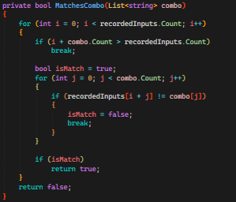
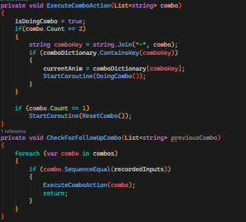
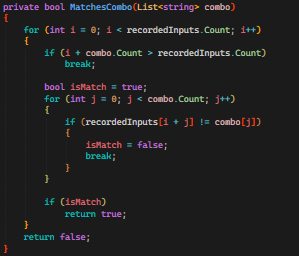
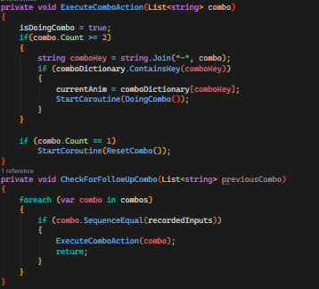
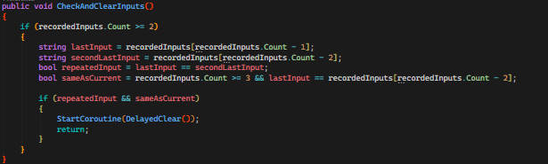
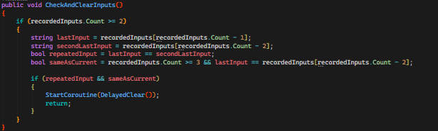

OilBaby

Feel free to try the Game HERE. Please also visit my github page if you want a detailed view of all scripts that i contributed to in this project @TomejGithub.
Gameplay trailerIntroduction I worked on the fighting implementation and how it executed in the game, creating codes that would connect animations with the players inputs to show flashy combos. I also created behaviour patterns for different bosses the player could face with a focus of making the fights more challenging and complex the more the player progressed in the game.
Project information
Engine: Unity 3D Genre: Horror Project duration: 2 weeks My role: Game programmer, working on main mechanics Group: 6 members
My contributions
Functionality of the torch • I created the functionality of the torch in the game. The torch is the main mechanic in the game. The player is required to keep the torch lit all the time in the game, if the torch burns out the monsters will kill the player. The player can claim areas in the game by lighting torches on the wall along the cave, this will create safe zones for the player. Shown in the video below. The player is safe as long as they are inside the zone of the light. The fire would eventually burn out if not reignited, which forced the player to move forward in the level.


My responsibilites
3. Enemy AI behaviour and movement 4. Menu functionality and save system functionality
Nr 1: Functionality of the torch will be divided into several parts below
1.1 Torch functionality The torch was the central mechanic of the game. This required it to work flawlessly so that the game was playable. In the game the player recieves a torch. This torch works as a safe zone for the player, as the fire keeps the monsters away. The player can spread this fire to unlit wall torches throughout the game in order to create a new safe zone. Similar to capturing zones. These wall torches when lit will provide a safe space for a specific amount of time. I created dynamic codes that worked for all the torches were the player needs to keep igniting and rekindeling their torches or else it burns out and the monster kills the player. The torches have vfx, sounds, lightsources which in combination creates a seemingly living flame. In the video shown below you can see how the torches light up and slowly die out. The reignition of the torches work as long as the player can interact with the torches, this requires the player to be close by and the torch to still have uses left. Please check code snippets below.Images and video of the torch mechanic
Torch mechanic video
Code snippets of the torch functionality

 



 
